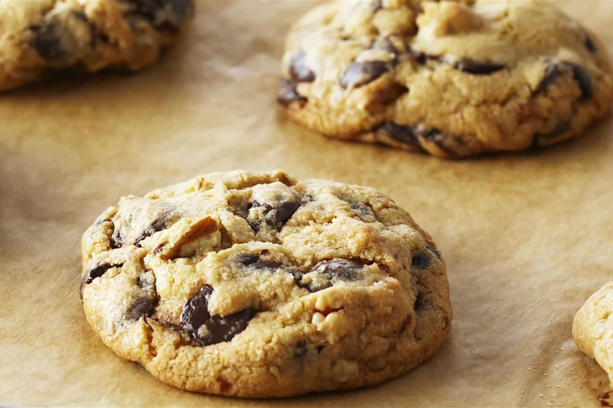

.jpg)
Hoy es domingo, significado de (chill day), queremos traer esta sección dominguera, donde encontraran postres fáciles y deliciosos para disfrutar de una tarde de pelis, de lectura, o simplemente tardes en los que quieras sorprender a tus seres queridos, aparte de que si tienes pequeños en casa los puedes incluir en la mayoría de los postres que aquí encontraras.
Hoy quisimos empezar por traerles una receta de galletas, si lo sabemos clásicas, y es que, con un vaso de leche fría, quien se puede resistir.
• 2 tazas de Harina (280 gramos).
• 2 unidades de Huevos.
• 1 taza de Chispas de chocolate.
• 1 taza de Azúcar (200 gramos).
• 1 taza de Mantequilla (225 gramos).
• 1 cucharadita de Polvos para hornear.
Coge un recipiente y mezcla bien la mantequilla con el azúcar para empezar a elaborar las galletas. Luego incorpora los huevos y sigue batiendo. Una vez integrados, agrega la harina previamente tamizada con el polvo de hornear y mezcla hasta obtener una masa homogénea.
Por último, añade las chispas de chocolate y mézclalas en la masa con una cuchara, espátula o las manos. Puedes dejar reposar la masa en la nevera durante 20 minutos y volver a amasarla durante 3 minutos al retirarla. De esta forma adquirirá mayor consistencia.
Importante: Poner a precalentar el horno a 180ºC antes de armar tus galletas.
Por último, da forma a tus galletas y colócalas sobre una bandeja, con cierta separación. Hornea las galletas con chispas de chocolate durante 20 minutos. Ni mas ni menos, para que te quede perfecta la consistencia. ¡ENJOY!
Continuara...
Con cariño – CAT & ELLA.